Estrategia para que el Dr. Wilmar Escobar opere más pacientes de alto valor — posicionando al Dr. Escobar como la primera opción en cirugía refractiva en Medellín y LATAM.
Ver calendario de publicaciones01 — Análisis de Competencia Digital
Los tres competidores compiten literalmente en el mismo edificio — la Clínica San Diego. El paciente no elige entre clínicas, sino entre doctores. Quien lo encuentre primero en digital, gana.
Lo que hace bien
La brecha
Esa proporción es brutal. 353 seguidores por publicación. No pasa por volumen — pasa porque tiene reels que se viralizan. Inconsistencia desde mayo de este año: ahí hay espacio para el Dr. Wilmar.
Lo que hace bien
La brecha
Sin presencia digital relevante rastreable en búsquedas. Opera solo por reputación clínica y tablero de programación de San Diego, sin posicionamiento digital. No es una amenaza en el canal que vamos a trabajar.
Hay dos competidores con algo de presencia — ninguno lo hace perfecto. El espacio para un doctor que combine consistencia + viralidad + ventas reales está completamente abierto. Wilmar lleva 16 años operando, tiene más experiencia clínica que sus competidores directos en San Diego, y puede construir desde cero una marca personal que los supere en 6 meses si la estrategia se ejecuta con disciplina.
02 — Posicionamiento y Voz de Marca
El Dr. Wilmar Escobar cambia vidas, no solo opera ojos — devuelve libertad ocular a personas que nunca pensaron que era posible.
La emoción central que debe transmitir la marca es la seguridad. El paciente que llega a operar sus ojos tiene miedo. Tiene preguntas que no sabe si son tontas. El doctor que responde todo con claridad, sin tecnicismos innecesarios, con calma y con evidencia, es el que se lleva la cirugía.
"¿Y si pierdo la visión?" es la objeción más profunda. No se combate con frases tranquilizadoras. Se combate con transparencia radical: explicar en qué consiste la evaluación previa, por qué no todos son candidatos, cómo se minimiza el riesgo. El rigor de los criterios de selección comunica más seguridad que cualquier claim de efectividad.
Movimiento estratégico: publicar contenido sobre cuándo NO se opera genera más confianza que decir cuántas cirugías exitosas hay. Muestra criterio médico, no promesas.
El paciente compara ese precio con lo que gasta en gafas, lentes y controles cada año. El contenido debe hacer ese cálculo por él: cuánto invierte en visión a lo largo de su vida sin cirugía vs. una sola vez con la intervención. No se trata de hablar de precio — se trata de hablar del valor de no volver a depender de nada.
Muchos pacientes no agendan por miedo a que les digan que no. El contenido debe pre-calificar audiencia: explicar los criterios generales (edad, estabilidad de la prescripción, espesor corneal), para que quien llega al WhatsApp ya sepa que tiene posibilidades reales. Esto también filtra consultas que no son quirúrgicas.
Hay una diferencia fundamental entre tener redes sociales y tener una narrativa. Las redes sin historia son un tablero de anuncios. Una narrativa bien construida es una película que la gente elige ver, espera con ansias y recomienda.
Estructura Pixar aplicada: Había una vez alguien que quería algo profundamente. Cada día intentaba conseguirlo pero algo se lo impedía. Un día ocurrió algo que cambió todo. Por eso tuvo que hacer algo que nunca antes había hecho. Hasta que finalmente lo logró. Y desde entonces, su vida ya no fue la misma.
El personaje principal no es el doctor como experto. Es el doctor como alguien que eligió dedicar su vida a devolverle algo que la mayoría da por sentado: la capacidad de ver. El antagonista no es una persona — es el miedo, la ignorancia, la procrastinación disfrazada de "lo hago el otro año."
Me-too moments — Láser (18-40 años)
Me-too moments — Catarata (45+ años)
03 — Arquitectura de Contenido
Contenido para detener el scroll, generar comentarios, compartidos y guardados. Hooks visuales, me-too moments, preguntas, mitos y verdades.
Contenido que convierte directamente. Precios, proceso de agendamiento, candidatura, testimonios con CTA a WhatsApp.
Contenido de marca personal. Historia del doctor, testimonios narrativos, humanización, momentos cotidianos con contexto.
Lunes
Educación — dato curioso, encuesta, pregunta de sí/no sobre visión
Miércoles
Proceso o vida del doctor — detrás de cámaras, consultorio, clínica
Viernes
Conversión suave — recordatorio de agendar, testimonios cortos, FAQ
Secuencia de embudo en 6 meses: El primer mes siembra, el segundo educa, el tercero construye autoridad, el cuarto vende con prueba social, el quinto activa urgencia y el sexto cierra y fideliza. Del segundo al cuarto, el láser lidera por volumen. Del cuarto al sexto, la catarata toma protagonismo — ticket más alto, paciente demora más en decidir. El pterigión se trabaja como el servicio "inesperado" que genera sorpresa y viralidad natural.
04 — Estrategia Mes a Mes
Cada mes tiene un tema, una emoción dominante y una secuencia de 4 reels + 4 posts. El contenido no es aleatorio — es una película con capítulos.
Julio 2026 · 1 al 31
Presentar al doctor, mostrar los problemas que resuelve, sembrar curiosidad. La primera impresión de la película.
Presentación del doctor. "¿Quién soy y por qué llevo 16 años operando ojos en la mejor clínica de Medellín?" No más de 60 segundos. Tono humano, directo. Hook: "Si llevas más de 5 años con gafas, esto te interesa."
Momento "me too" láser. El gancho de lo que vive alguien miope: despertarse y no ver el reloj, nadar con todo borroso, depender de las gafas para existir. Sin solución todavía. El comentario que se busca: "jajaja eso soy yo".
"Independízate de las gafas" — semana del 20 de julio. Video dinámico: sin gafas al despertar, sin lentes en el mar, sin buscar el estuche antes de salir. Cierre: "La cirugía dura minutos. La libertad, toda la vida."
"¿Cuánto tiempo llevas con gafas?" El doctor va listando cómo cambia la vida con el tiempo: primero lentes suaves, luego lentes de contacto, luego dioptrías que suben. Solo siembra. Sin precio todavía.
Carrusel: "¿Tu ojo tiene esto?" Slide a slide: cómo se ve el ojo con miopía, astigmatismo, hipermetropía, catarata, pterigión. Foto real del ojo y su condición. Copy: "Para los médicos: error refractivo por elongación axial. Para el resto: el ojo que no enfoca de lejos."
Carrusel de presentación de servicios. "Tres cirugías. Un solo especialista. La mejor clínica de Medellín." Un slide por servicio: Láser, Catarata, Pterigión. CTA a WhatsApp.
Proceso de agendamiento. "¿Cómo agendo una valoración?" Paso 1: escribir al WhatsApp. Paso 2: dar datos básicos. Paso 3: elegir fecha. Paso 4: cita presencial en San Diego. Humanizar el proceso reduce la fricción.
"¿Cuánto sabes de tus ojos?" Afirmaciones verdaderas y falsas en carrusel: "Los lentes de contacto deterioran la vista (falso)", "La catarata solo le da a los viejitos (falso)", "El pterigión puede volver (verdad, pero hay forma de evitarlo)." Objetivo: comentarios y guardados.
Historias — Julio
Encuesta: ¿usas gafas?
Clips de la clínica San Diego, el consultorio, el equipo con el que opera el doctor.
Dato corto: "El 80% de los problemas visuales tienen solución quirúrgica."
Agosto 2026 · 1 al 31
Educación profunda. Causas, riesgos, mecanismos. El paciente que entiende qué tiene tiene mucho más interés en resolverlo.
"¿Por qué eres miope?" El doctor explica de forma visual: "Para los oftalmólogos: elongación axial que desplaza el punto focal anterior a la retina. Para los demás: el ojo les quedó alargado y la imagen no cae donde debe." Usar maqueta o elemento visual. Contenido para guardar y mandar.
"¿Qué causa la catarata y por qué te va a dar algún día?" La catarata no es enfermedad de viejos — es un proceso natural del cristalino que el sol, la diabetes y los años aceleran. Hook: "Si tienes más de 45 años y sientes que los focos encandilan más que antes, escucha esto."
"Regresa a clases sin gafas." Ángulo universitario. "Imagina empezar el semestre sin buscar las gafas cada mañana." Video dinámico con situaciones de estudiante viendo mal. CTA a valoración.
"¿Qué es el pterigión y por qué crece?" Imagen real del ojo afectado. "No es un tumor. Es tejido que crece sobre tu córnea por el sol, el viento y el polvo." En Colombia, con la altura y la exposición UV, es más común de lo que se cree. Alto potencial de viralidad.
Carrusel: "Riesgos de no tratar la miopía alta a tiempo." Slide por riesgo: desprendimiento de retina, glaucoma asociado, calidad de vida deteriorada. Tono informativo, no alarmista: "Tu vista no espera. El tiempo sí avanza." CTA suave a valoración.
Carrusel: "¿Eres candidato para la cirugía láser?" Check list visual: "Tienes entre 18 y 45 años ✓, llevas más de un año con la misma graduación ✓, no tienes condiciones especiales en la córnea ✓, quieres dejar las gafas para siempre ✓." Cierre: "Si marcaste todo, escríbenos." CTA a WhatsApp.
"¿Por qué operar el pterigión antes de que avance?" Carrusel educativo con antes y después visual. Si avanza sobre la pupila puede afectar la visión de forma permanente. CTA a valoración.
Mitos y verdades parte 1 — Cirugía láser. "¿Duele? ¿Puedo quedar ciego? ¿Cuánto dura la corrección?" El doctor responde con autoridad y claridad. Objetivo: guardados y compartidos.
Historias — Agosto
Dato de visión de impacto: "El 45% de las personas mayores de 50 ya tiene algún grado de catarata sin saberlo."
El doctor explicando algo corto en video — detrás de cámaras en consulta o quirófano.
Encuesta: "¿Sabes qué tan bien estás viendo realmente?"
Septiembre 2026 · 1 al 30
Construir autoridad del doctor. El paciente ya sabe que tiene un problema. Ahora necesita saber por qué este es el doctor.
"16 años, X mil ojos operados." El doctor habla directo a cámara. "No te voy a decir que soy el mejor. Te voy a decir que llevo 16 años haciendo esto en la misma clínica y que los pacientes siguen volviendo y mandando a su familia." Las cifras reales de cirugías son prueba social sin necesidad de testimonios.
"¿Por qué me especialicé en córnea y segmento anterior?" El doctor habla de su historia, su formación, qué lo llevó a esa subespecialidad. Es el contenido de marca personal más poderoso porque humaniza al cirujano antes de que el paciente llegue al consultorio.
"Un día en la vida del doctor." Detrás de cámaras de una jornada quirúrgica. El doctor llegando a la clínica, preparando el quirófano, revisando pacientes posoperatorios. La rutina como evidencia de experiencia y dedicación.
"Paso a paso de la cirugía de catarata." El doctor narra cada etapa: diagnóstico, selección del lente intraocular, la cirugía, recuperación. Punto clave: "La catarata es la primera causa de ceguera en el mundo y la más curable. Tratar hoy."
Carrusel: "La Clínica San Diego no es solo una sede." Mostrar infraestructura, quirófanos, tecnología. El paciente siente que no solo está eligiendo un doctor sino el mejor entorno posible.
Amor y Amistad — semana del 19. "¿Y si este mes le regalas visión?" Perfiles: "Para tu mamá que ya no distingue los colores: catarata. Para tu hermano que lleva 7 años con gafas: láser. Para tu amigo con el ojo rojo: pterigión." CTA: regala la valoración, $220.000, con el médico que lleva 16 años en San Diego.
"Paso a paso de la cirugía de pterigión." Antes (ojo afectado), durante (resección del tejido), después (ojo limpio). Énfasis en recuperación rápida y técnicas para evitar la recurrencia.
Mitos y verdades parte 2 — Catarata y pterigión. "¿La catarata es solo de viejos? ¿El pterigión vuelve a crecer? ¿La cirugía de catarata deja vendado días?" Respuestas del doctor.
Historias — Septiembre
Educación visual corta.
Día del doctor: cirugía en curso, preparación, revisión posquirúrgica.
Semana del 19: "Regala visión este Amor y Amistad." CTA con enlace a WhatsApp.
Octubre 2026 · 1 al 31
Prueba social. Testimonios reales, antes y después, historias de transformación. El paciente que duda se convence cuando ve que alguien como él ya lo hizo.
Semana del 5 al 11 de octubre: Activación especial todos los días. Es la única semana en que la sociedad habla de visión de forma espontánea. Toda la semana debe tener contenido y pauta activa.
Día Mundial de la Visión — 8 de octubre. "Hoy es el Día Mundial de la Visión y hay algo que el mundo necesita escuchar." Dato: más de 2.200 millones de personas tienen algún problema visual. El 80% de los casos son prevenibles o tratables. CTA: "Si estás entre ese 80%, no tienes excusa para seguir esperando."
Testimonio en video — paciente de cirugía láser. Quién era antes, cuántas dioptrías tenía, cómo cambió su vida. Si puede aparecer el paciente, mejor. Hook: "Esta persona llevaba 12 años con gafas. Hoy no las necesita."
Testimonio en video — paciente de catarata. El ángulo emocional más potente. No es "quiero dejar las gafas." Es "no podía ver a mis hijos, ya no reconocía las caras, dejé de manejar de noche." La recuperación de la catarata tiene el drama emocional más profundo de los tres servicios.
"Los precios." El doctor habla directo a cámara. "Sé que esto es lo primero que quieren saber." Da el precio de la valoración ($220.000 con todos los exámenes preoperatorios incluidos), el precio de la cirugía láser ($3.600.000), el crédito disponible con la clínica. El precio de catarata se cotiza en valoración según el lente. Uno de los contenidos con más potencial de viralidad porque nadie en el mercado lo dice con esta claridad.
Carrusel especial Día Mundial de la Visión. "Los 5 problemas visuales más comunes y qué puedes hacer hoy." Miopía, hipermetropía, astigmatismo, catarata, pterigión. Síntoma, consecuencia de no tratarlo y solución. Contenido para poner en pauta esa semana.
Testimonio escrito con foto de antes y después. Narrado en primera persona si hay permiso. Si no, el doctor lo reconstruye en tercera persona con datos reales.
Carrusel: "La recuperación. ¿Qué pasa después de la cirugía láser?" Día 1, día 3, semana 1, semana 4. Qué puede y no puede hacer el paciente. Responde la objeción número uno: el miedo a la recuperación.
"Todo lo que incluye la valoración por $220.000." Desglose claro: exámenes preoperatorios, diagnóstico personalizado, plan quirúrgico, respuesta en 24 horas si eres candidato. Convierte la valoración en inversión, no en gasto.
Historias — Octubre
Dato de salud visual. Semana del 5 al 11: historias todos los días con activación Día Mundial de la Visión.
Video corto del doctor.
CTA: "¿Tienes dudas? Escríbenos."
Noviembre 2026 · 1 al 30
Urgencia real y basada en hechos. El tiempo juega en contra de los problemas visuales sin tratar. Todo el mes se construye hacia el Black Friday con beneficio especial — no descuento en el procedimiento.
En servicios médicos el descuento en la cirugía daña la percepción de calidad. Lo que funciona es beneficio adicional: valoración incluida en el paquete, kit posoperatorio sin costo, prioridad en agenda para cerrar el año. El mensaje es "ventaja especial de noviembre", no "precio de remate."
Primera semana. "El año se acaba. ¿Sigues viendo mal?" Gancho de cierre de año. "La operación que dijiste 'la hago después' lleva años esperando." Tono de humor empático.
Semana 2 — "Black Friday en oftalmología." El doctor aclara de entrada: "Aquí no vendemos salud con descuento. La calidad no se negocia." Anuncia el beneficio especial de noviembre para quienes agenden ese mes. Transparencia total — eso genera más confianza que cualquier descuento.
Semana 3, previo al Black Friday. Testimonio de alguien que decidió en noviembre y terminó el año con una vida diferente. Si no hay uno específico de noviembre, se adapta con el mensaje de "tomó la decisión y le cambió la vida."
30 de noviembre — Cyber Monday. "Quedan cupos para cirugía antes de que termine el año." Énfasis en que operar antes de diciembre permite empezar el 2027 con visión plena.
Carrusel semana 3. "Noviembre especial: esto incluye tu cirugía este mes." Desglose del beneficio. Cupos disponibles. Fecha límite. CTA urgente a WhatsApp.
27 de noviembre — Black Friday. "Hoy es el día. Los cupos de noviembre se están cerrando." CTA con urgencia. Respuesta rápida por WhatsApp.
"¿Qué le preguntarías a un cirujano de ojos si pudieras?" El doctor invita preguntas en comentarios. Responde en historias. Genera comunidad y da material para contenido futuro.
Mitos y verdades parte 3 — Los más duros. "¿La cirugía de ojos puede dejarte ciego? ¿Duele durante la operación? ¿La visión vuelve a bajar después del láser?" El doctor responde cada uno sin esquivar, con la calma de 16 años de experiencia.
Historias — Noviembre
Countdown al Black Friday.
El doctor hablando del beneficio del mes.
Recordatorio de cupos. Semana del 24 al 30: historias todos los días con CTA activo.
Diciembre 2026 · 1 al 31
Cierre emocional del año. Agradecimiento, comunidad y un empujón final para quien no decidió en noviembre con el ángulo de "empieza el 2027 diferente."
Primera semana. "Este año operé X ojos. Y quiero contarte algo." El doctor habla de lo que significan esos números en vidas reales: el abuelo que volvió a ver a sus nietos, la joven que se graduó sin gafas, el señor que por fin puede manejar de noche. El contenido más poderoso del año.
Semana 2. "Empieza el 2027 viendo bien. Agenda ahora." Los pacientes que esperan enero para decidir no saben que la agenda de enero se llena en diciembre. CTA con urgencia de cupos. Mantiene el flujo comercial activo en el mes que más baja tiende a caer.
Semana 3 — época de Novena. Testimonios del año compilados. Si hay pacientes con permiso de aparecer, perfecto. Si no, el doctor narra en primera persona los casos que más lo marcaron en 2026. Sin filtros ni producción excesiva. Autenticidad total.
"¿Cuál fue la pregunta sobre visión que más te sorprendió en 2026?" El doctor responde la pregunta más inesperada del año. Contenido de cierre fresco y directo que invita a comentar.
"Las preguntas que más nos hicieron en 2026 sobre cirugía de ojos." Recopilación de las dudas más frecuentes del año respondidas en carrusel. Útil, compartible, posiciona al doctor como referente.
7 de diciembre — Día de las Velitas. "En esta noche de luces, que tu mayor luz sean tus ojos." Contenido emotivo breve, no comercial. Solo branding y calidez.
"¿Por qué diciembre y enero son el mejor momento para operarse?" En diciembre muchas personas tienen tiempo libre de recuperación. En enero regresan al trabajo ya recuperados. Hay cupos. CTA.
Cierre de año. "Gracias por confiar sus ojos en nosotros." Breve agradecimiento y teaser de lo que viene en 2027. Genera expectativa y fidelidad.
Historias — Diciembre
Conteos de cierre de año.
Clips navideños del doctor y el equipo.
CTA para enero: "Agenda ahora, opera en enero, empieza el año viendo diferente."
05 — Estrategia de Pauta Publicitaria
Distribución del presupuesto en tres capas con objetivos distintos.
Campaña Láser
Audiencia 18–42 años, Medellín y área metropolitana, más ciudades fuera de Colombia para turismo médico (Miami, Madrid, Nueva York). Objetivo: leads a WhatsApp. Creativos basados en el "me too" de vivir con gafas y en el precio revelado. Se activa desde julio y corre todo el semestre.
Campaña Catarata
Audiencia 45–70 años directamente, y también 35–55 años que pueden ser hijos o familiares. Medellín y ciudades de Antioquia principalmente. Mayor impacto en Facebook que en Instagram porque la audiencia mayor usa más esa red. Al menos el 30% del presupuesto de captación — es el servicio de mayor rentabilidad y los competidores no la trabajan fuerte en digital.
Campaña Pterigión
Audiencia amplia, 20–55 años, con intereses en deportes al aire libre, ciclismo, senderismo. El pterigión es muy visual y el antes y después genera alto CTR. Presupuesto menor pero leads a buen costo — la competencia digital en este servicio es muy baja.
Personas que vieron los videos del feed pero no escribieron, personas que visitaron el perfil sin contactar, personas que interactuaron con publicaciones. Este público ya conoce al doctor y necesita solo un empujón adicional. Se activa desde el segundo mes cuando ya hay audiencia calentada.
Los mejores posts del mes se ponen en pauta para llegar más lejos. Especialmente los de precio revelado, los de mitos y verdades, y los testimonios — tienen alta tasa de conversión cuando se les paga alcance.
Antes de lanzar pauta, verificar el estado del Business Manager. Esto debe resolverse en la primera semana. También se recomienda activar la base de datos de pacientes anteriores como audiencia personalizada en Meta — se sube la lista de contactos y se crea una audiencia lookalike del 1% al 3% en Colombia. Eso mejora dramáticamente la calidad de los leads.
06 — Fechas Comerciales Clave
Ángulo ligero: "Independízate de las gafas."
Sin fecha fija. Ángulo: empezar el segundo semestre sin gafas.
Ángulo: regalar valoración o cirugía a pareja, amigo o familiar.
La fecha más importante del año para este negocio. Toda la semana del 5 al 11 debe tener activación especial en redes y en pauta. Es el único momento en que la sociedad habla de visión de forma espontánea.
Beneficio especial en paquete de cirugía, no descuento en el procedimiento.
Último empujón digital del mes.
Contenido emocional y de marca, no comercial.
CTA para agendar en enero y empezar el año operado.
07 — Contenidos Adicionales
Contenidos que se recomiendan incorporar al mix por su capacidad de generar viralidad, filtrar leads o activar el nicho de turismo médico.
Un post o reel que explique la infraestructura, los quirófanos, los estándares. El doctor no lo dice de sí mismo — lo dice de la clínica donde opera. El paciente asocia ese entorno de excelencia con el doctor.
Video específico para colombianos que viven fuera. Proceso: agendan por WhatsApp desde donde estén, valoración y cirugía pueden hacerse en la misma visita si los tiempos lo permiten. Activa el nicho de turismo médico que es un diferencial real del doctor.
Carrusel de preparación para la cita. Qué llevar, qué no llevar, si hay que dejar los lentes de contacto antes, si la valoración duele, cuánto tiempo dura. Reduce el miedo previo y mejora la tasa de asistencia.
Pre-cualifica al paciente perfecto y evita leads de baja calidad que consumen tiempo de la asesora. Parece que va en contra del crecimiento pero en realidad es lo contrario. Se puede manejar con humor y autoridad.
Muchas personas no saben la diferencia. Este contenido educa, diferencia al doctor y redirige la demanda correcta hacia él.
Si hay pacientes colombianos en Miami, Nueva York, Madrid o Houston que operaron con el doctor — una historia en video de 30 segundos desde su ciudad tiene altísimo impacto.
08 — Métricas y Objetivos por Etapa
La estrategia no parte de cero. Seguiremos aprovechando el sistema actual de generación de leads mientras implementamos mejoras en contenido, confianza, seguimiento y conversión.
Aunque continuaremos generando leads, la prioridad será mejorar la presencia digital, aumentar la confianza de la audiencia y crear una comunidad más calificada.
Métricas de esta etapa
Con audiencia fortalecida y estrategia validada, el objetivo será mejorar el rendimiento de los leads que ya se consiguen y convertir mayor porcentaje en valoraciones y cirugías.
Métricas de esta etapa
Crecimiento de comunidad
+2.000 seguidores
orgánicos calificados — Medellín y diáspora colombiana
Leads mensuales (desde mes 3)
80 – 150
mensajes entrantes de pacientes interesados
Valoraciones agendadas (desde mes 3)
25 – 50
valoraciones mensuales
Cirugías atribuibles a digital (desde mes 4)
8 – 12
cirugías mensuales — prioridad catarata
La cirugía de catarata es la que paga las cuentas. El láser llena el feed porque el público es joven y digital. Pero la catarata tiene el ticket más alto, el paciente tiene mayor poder adquisitivo, y hay mucha menos competencia digital en ese segmento. La estrategia asigna a la catarata no menos del 30% de todo el contenido y del presupuesto de pauta, y ese porcentaje aumenta del cuarto mes en adelante. Si hay resistencia a comunicar catarata porque "se siente viejo" — ese es exactamente el mito que hay que romper internamente primero.